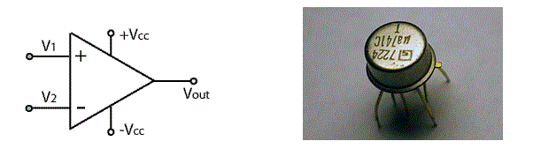

Power Supply for an OP-AMP
Working Principle of Op-amp
• Open Loop Operation
• Closed Loop Operation
Ideal OP-AMP Characteristics
Practical OP-AMP
Applications
An operational amplifier or OP-AMP is a DC-coupled voltage amplifier with a very high voltage gain. Op-amp is basically a multistage amplifier in which a number of amplifier stages are interconnected to each other in a very complicated manner. Its internal circuit consists of many transistors, FETs and resistors. All this occupies a very little space. So, it is packed in a small package and is available in the Integrated Circuit (IC) form. The term OP-AMP is used to denote an amplifier which can be configured to perform various operations like amplification, subtraction, differentiation, addition, integration etc. Example is the very popular IC 741. The symbol and its actual appearance in the IC form is show below. The symbol appears as an arrowhead which signifies that the signal is flowing from output to input.

Input & Output Terminals of an OP-AMP
An op-amp has two input terminals and one output terminal. The op-amp also has two voltage supply terminal as seen above. It has a differential input and a single ended output. The terminal marked as negative (-) is called as an inverting terminal And the terminal marked as positive (+) is called as a non-inverting terminal of the operational amplifier. If we connect an input signal at the inverting terminal (-) of the op-amp than the amplified output signal is π radians (180°) out of phase with respect to the applied input signal, whereas if an input is connected to the non-inverting terminal (+) than the output signal obtained will be in phase i.e. it will have no phase shift with respect to the input signal.
Power Supply for an OP-AMP
As seen from the circuit symbol above it has two input power supply terminals +VCC and –VCC. For the operation of an op-amp a dual polarity DC supply is essential. In the dual polarity supply the +VCC is connected to the positive supply of one power source or battery and the –VCC terminal is connected to the negative supply of another source. However few op-amps can also operate on a single polarity supply. Note that there is no common ground terminal in the op-amps hence the ground has to be established externally.
Working Principle of Op-amp
Open Loop Operation
As said above an op-amp has a differential input and single ended output. So, if two signals are applied one at the inverting and another at the non-inverting terminal, than an ideal op-amp will amplify the difference of the two applied input signals applied. The difference of the two applied input signals is called as differential input voltage. The output of an op-amp is given by the equation:
")
Where,
V0 is the voltage at the output terminal of the op-amp.
AOL is the open-loop gain for the given op-amp and is constant (ideally).
For the IC 741 it is 2 x 105.
V1 is the voltage at the non-inverting terminal.
V2 is the voltage at the inverting terminal.
VD = (V1-V2) is the differential input voltage.
It is clear from the above equation that the output will be non-zero if and only if the differential input voltage is non-zero, and will be zero if both V_1 and V_2 are equal. Note that this is an ideal condition, practically there are small imbalances in the op-amp. The open-loop gain of an op-amp is very high hence, very small applied differential input voltage will be amplified to a very large value.
Also note that it is true that if we apply a very small differential input voltage it is amplified to a very large value but this very large value at the output cannot go beyond the supply voltage of the op-amp. Hence it is not violating the law of conservation of energy.
Closed Loop Operation
The above explained operation of the op-amp was for open-loop i.e. without a feedback. In the closed loop configuration a feedback is introduced. This feedback is a part of an output signal fed back to the input. Hence, at the input where the feedback is given two signals will be simultaneously present. One of them is the original applied signal and the other is the feedback signal. The fed back signal can be in phase or out of phase with the original applied signal. If the original applied signal and the feedback signal are in phase with each other than it called as a positive feedback or a regenerative feedback. If the applied signal and the feedback signal are out of phase with each other than it is called as a negative feedback or a degenerative feedback. Each type of feedback, negative or positive has its own advantages and disadvantages. The output of a closed loop op-amp is given by the equation:

Where,
V0 is the voltage at the output terminal of the op-amp.
ACL is the closed loop gain of the op-amp which is determined by the
feedback circuit connected to the op-amp.
VD = (V1-V2) is the differential input voltage.
The feedback is said to be positive if part of the signal from the output terminal is given back to the non-inverting (+) terminal of the op-amp. Positive feedback is used in oscillators.
The feedback is said to be negative if part of the signal from the output terminal is given back to the inverting (-) terminal of the op-amp. Negative feedback is used when op-amp’s are to be used as amplifiers.
This is above most common working principle of an op-amp.
Ideal OP-AMP Characteristics
An ideal op-amp is expected to have the following characteristics:
1.Infinite voltage gain (So that maximum output is obtained)
2.Infinite input resistance (Due to this almost any source can drive it)
3.Zero output resistance (So that there is no change in output due to change in load current)
4.Infinite bandwidth
5.Zero noise
6.Zero power supply rejection ratio (PSSR=0)
7.Infinite common mode rejection ratio (CMMR=∞)
Practical OP-AMP
None of the above given parameters can be practically realized. A practical or real op-amp has some unavoidable imperfections and hence its characteristics differ from the ideal one. A real op-amp will have non-zero and non-infinite parameters.
Applications
The integrated op-amp’s offers all the advantages of IC’s such as high reliability, small size, cheap, less power consumption. They are used in variety of applications such as Inverting & Non-inverting amplifiers, Unity gain buffer, Summing amplifier, Differentiator, Integrator, Adder, Instrumentation amplifier, Wien bridge oscillator, Filters etc.
 by
by